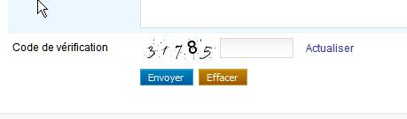

Critères incontournables pour le développement
1. Donner un titre aux pages
Cible : tout le monde, et en particulier les personnes déficientes visuelles.
Quand : dès la conception et pendant le développement.
Description :
Donner à chaque page un titre qui lui est spécifique et qui reflète son contenu ou sa fonction (balise <title>).
Le titre de la page est le premier élément lu par la synthèse vocale, il doit permettre d’identifier la page sur laquelle on se trouve.
À vérifier :
- Bien qu’il n’y ait pas de règle, en général, on va de l’information la plus spécifique vers la moins spécifique (exemple : nom de la page courante - nom du site). Dans d’autres contextes d’utilisation pour lesquels l’utilisateur a de nombreuses applications ou sites ouverts en même temps, il vaut mieux aller de l’information la plus générale vers la plus spécifique (exemple : nom du site - nom de la page).
- Lorsque le contenu de la page est modifié dynamiquement (affichage du résultat d’une recherche, erreurs dans un formulaire, action utilisateur ajoutant du contenu…), le titre de la page doit refléter cette modification du contenu.
Objectif utilisateur :
Permettre aux utilisateurs d’identifier le sujet d’une page, de se repérer et se faire une idée précise du contenu de la page sans avoir à le lire. C’est, notamment, le premier élément vocalisé par un lecteur d’écran.
Exemple valide :
<title>Accueil - Espace client Orange</title>
Exemple non-valide :
<title>Accueil</title>
Référence WCAG :
2. Donner des titres aux rubriques
Cible : tout le monde, et en particulier les personnes déficientes cognitives, avec des difficultés pour lire et déficientes visuelles.
Quand : dès la conception, à la rédaction du contenu et pendant le développement.
Description :
Identifier les balises de titres à utiliser (balises HTML h1 jusqu’à h6) pour structurer le contenu des pages.
Les personnes malvoyantes naviguant à l’aide d’un lecteur d’écran peuvent accéder à la liste des titres de la page pour naviguer rapidement.
Tout comme dans un fichier Word, il est possible d’utiliser la table des matières si des titres ont correctement été positionnés à l’intérieur du document.
À vérifier :
- Les titres doivent être pertinents et non vides.
- Il ne doit pas exister de saut dans la hiérarchie des titres (on ne passe pas directement d’un titre
h2à un titreh4). - On peut mettre plusieurs
h1par page (se limiter tout de même à deux dans la majorité des cas). - Les lecteurs d’écran ne prennent pas en compte les titres masqués (
visibility: hidden;,display: none;ouaria-hidden). - Le contenu généré dynamiquement doit aussi respecter cette exigence.
Objectif utilisateur :
- Pour tous les utilisateurs : améliorer la structure de la page et de son contenu.
- Pour les utilisateurs déficients visuels, déficients cognitifs ou ayant des difficultés de lecture : faciliter la navigation et l’accès au contenu.
Objectif technique :
- Pour les moteurs de recherche : améliorer le référencement.
Exemple valide :
Un titrage de page cohérent et pertinent :
<h1>Accueil – Orange</h1>
<h2>Les actualités</h2>
<h2>La fibre arrive !</h2>
<h3>Êtes-vous éligible ?</h3>
Exemple non-valide :
Un titrage de page avec un saut de niveau h2 → h4 :
<h1>Accueil – Orange</h1>
<h2>Les actualités</h2>
<h2>La fibre arrive !</h2>
<h4>Êtes-vous éligible ?</h4>
Outils :
Des extensions à installer dans votre navigateur permettent d'extraire la liste des titres :
- L’extension HeadingsMaps.
- L'extension Web developer.
Référence WCAG :
3. Assurer un contraste suffisant entre texte et fond
Cible : tout le monde, en particulier les utilisateurs sur mobile et tablette, les personnes malvoyantes, éprouvant des difficultés de lecture ou avec un déficit d’attention et les seniors.
Quand : dès la phase de conception et lors du développement.
Description :
Le niveau de contraste entre le texte et l’arrière-plan même pour des éléments graphiques porteurs de sens doit être suffisamment élevé.
Un niveau de contraste insuffisant sera préjudiciable pour les utilisateurs ayant des difficultés visuelles ainsi que pour les utilisateurs de mobiles et tablettes se trouvant dans un environnement très lumineux.
Exemple non valide :
Le texte « film | 20h40… » ne présente pas un contraste suffisant. Celui-ci ne sera pas lisible par tous les utilisateurs.

Les images suivantes sont porteuses d’information pour les utilisateurs. Elles doivent fournir un contraste de couleur de 3:1 minimum.

À vérifier :
- S'assurer que le contraste entre la couleur du fond et celle du texte et également pour du texte sous forme d’image porteur d’information, est :
- De 4.5:1 minimum pour une taille inférieure à 24px CSS et 19px CSS en gras.
- De 3:1 minimum suffit pour une taille est supérieure à 24px CSS et 19px CSS en gras.
S'assurer que Les objets graphiques porteurs d'information, les composants d’interface utilisateur et les états de l'interface (focus, hover…) ont un contraste de 3:1. Sont concernés, entre autres : les boutons, les boutons radios, les cases à cocher, les listes de sélection, les menus et volets de navigation, les barres d’outils, les onglets, les carrousels, les curseurs, les barres de progression, les bulles d’aides, les barres de progression, les graphiques… On n’est pas tenus d’appliquer ce critère :
- si le composant graphique ne peut pas être représenté autrement : drapeau, logotype, photos réelles, captures d'écran, diagrammes d'informations médicales utilisant les couleurs de la biologie, dégradés représentant une mesure (cartes de chaleur…)
- si un texte, comme un label, un tableau de donnée…, apporte la même information que l’icône ou le graphique.
- si le manque de contraste de l’image n'empêche pas la compréhension du contenu ou d'identifier la fonction
- si un composant d'interface est inactif et donc peut être ignoré par l’utilisateur sans réelle perte d'information.
- Attention : pour des applications principalement utilisées en web mobile ou en mobilité, le niveau de contraste des principaux éléments doit être de 7:1 afin d’assurer une bonne lisibilité pour tous.
Objectif utilisateur :
Faciliter la lecture à tous les utilisateurs, déficients visuels ou personnes dans un environnement lumineux défavorable (en mobilité).
Outil :
L’application Colour Contrast Analyser permet de mesurer rapidement des niveaux de contraste de couleurs (gratuit pour Mac et Windows).
Référence WCAG :
4. Ne pas utiliser la couleur ou l’information sensorielle comme seule source d’information
Cible : tout le monde, en particulier les daltoniens et plus généralement les personnes malvoyantes ou ayant une déficience cognitive, auditive et les seniors.
Quand : dès la phase de conception et lors du développement.
Description :
Ne pas utiliser la couleur ou une information sensorielle (forme, taille, son, orientation, localisation visuelle…) comme la seule façon de véhiculer de l’information, d’indiquer une action, de solliciter une réponse ou de distinguer un élément. L’information fournie par un changement de couleur ou une information sensorielle doit être complétée par une information textuelle (alternative) ou/et structuration sémantique.
À vérifier :
- Faire une capture d’écran et la passer en noir et blanc. La perte des couleurs ne doit pas entraîner de difficulté dans la navigation, ni provoquer de perte d’information.
- Couper le son, le niveau d’information doit rester identique.
- S'assurer que les liens sont identifiables par un autre moyen que la couleur (en général, le soulignement).
Objectif utilisateur :
Permettre aux utilisateurs ne distinguant pas les couleurs ou l’information sensorielle (les daltoniens, déficients visuels, déficients auditifs, utilisateurs de mobile en luminosité extérieure, en milieu bruyant…), d’accéder tout de même à l’information par d’autres moyens.
Exemple :
Pour un graphique type camembert, où chaque partie est colorée différemment, ajouter par exemple une texture différente pour les identifier sans la couleur.
Exemple valide :
Exemple non-valide :
Cet exemple n’est pas valide, car l’information est transmise uniquement par la couleur.
Référence WCAG :
5. Respecter la sémantique HTML
Cible : tout le monde, et en particulier les personnes déficientes visuelles, avec des déficiences cognitives et les seniors.
Quand : dès la conception et à la rédaction du contenu.
Description : Utiliser correctement les éléments HTML, en respectant ce pourquoi ils sont faits (validation du code et respect des spécifications) et donc leur sémantique.
À vérifier : Vérifier que la page, si besoin, utilise des listes sémantiquement pertinentes (pas de liste vides ou ne contenant qu’un seul élément) :
<ol>pour les listes ordonnées,<ul>pour les listes non ordonnées,<li>pour les éléments de liste.<dl>,<dt>et<dd>pour les listes de définitions
Les listes possèdent au moins deux éléments car sinon ce ne sont pas des listes (sauf si elles sont générées dynamiquement)
S’assurer de bien baliser les citations longues <blockquote> ou brèves <q>.
Les liens sont bien des liens (i.e. balise <a>) : ils pointent effectivement vers une autre adresse, page ou onglet…
Les boutons sont bien des boutons (i.e. balise <button>, ou <input type="button">) : ils déclenchent une action, une validation, ou encore permettent de faire un choix…
Penser, dans la mesure du possible, à respecter l’apparence classique de ces éléments pour ne pas perturber l’utilisateur habitué à leur aspect spécifique.
Dans le code HTML s’assurer, lors de la validation, qu'à minima :
- les éléments ont des balises de début et de fin,
- les éléments sont imbriqués conformément à leurs spécifications,
- les éléments ne contiennent pas d’attributs dupliqués,
- chaque
idest unique.
Objectif utilisateur :
Permettre à tous les utilisateurs d’anticiper la manière d’utiliser et les comportements possibles pour un élément d’interface donné, en assurant que le bon fonctionnement des AT.
Objectif technique :
Oblige à la structuration cohérente du contenu par le créateur du site et permet d'améliorer la maintenabilité.
Exemple non-valide :

Dans cet exemple, le lien « Actualiser » devrait être un bouton « Actualiser » car ici il déclenche une action et non le chargement d’une URL (page).
Référence WCAG :
Outil : validateur HTML et CSS du W3c
6. Séparer le contenu de l’interactivité et de la présentation
Cible : tout le monde, et en particulier les personnes déficientes visuelles, avec des difficultés pour lire ou avec un déficit d’attention.
Quand : lors du développement.
Description :
Séparer strictement le contenu (HTML), l’interactivité (Javascript) et la présentation (CSS).
À vérifier :
- Ne pas faire de mise en pages en tableaux, ceux-ci étant réservés aux données tabulaires.
- Ne pas utiliser d'image pour afficher du texte sauf exception (présentation qui ne peut pas être réalisée via CSS).
- Utiliser des classes CSS plutôt que manipuler des styles CSS en ligne dans le code HTML.
- Ne pas utiliser les pseudo éléments CSS (::before, ::after…) pour afficher du contenu porteur d’information
- Ne pas câbler des événements Javascript directement dans le code HTML mais gérer l’interactivité dans un script ou un fichier JS à part.
Objectif utilisateur :
Permettre aux utilisateurs, via leur agent utilisateur ou aide technique (par exemple, leur navigateur), de modifier le rendu visuel de la page (grossissement, couleur, position…). Par exemple, de grossir le texte sans problème de mise en page.
Objectif technique :
Améliore globalement la maintenabilité.
Référence WCAG :
8. Indiquer la langue principale et les changements de langue
Cible : pour tout le monde, et en particulier les personnes déficientes visuelles.
Quand : lors du le développement.
Description :
Spécifier la langue principale du document grâce à l’attribut lang dans la balise html.
Préciser également la langue d’un contenu exprimé dans une langue autre que la langue principale, en utilisant l’attribut lang dans l’élément HTML contenant l’expression en langue étrangère.
À vérifier :
Pour les mots ou les expressions en langue étrangère passés dans l’usage courant (Google, newsletter…) ou les noms propres, ne pas indiquer de changement de langue.
Objectif utilisateur :
Cet attribut permet d’indiquer à la synthèse vocale la langue à utiliser.
Objectif technique :
Permettre aux moteurs de recherche d’identifier la langue d’une page pour améliorer le référencement naturel.
Exemple pour une page en français :
- pour du HTML :
<html lang="fr"> - pour du XHTML :
<html xmlns="http://www.w3.org/1999/xhtml" xml:lang="fr" lang="fr">
Exemple de changement de langue :découvrir Orange <span lang="en">live</span> TV
Référence WCAG :
9. Associer une étiquette pertinente à chaque champ de formulaire
Cible : tout le monde, et en particulier les personnes déficientes visuelles et cognitives, avec un déficit d’attention et les utilisateurs de tactiles (mobile et tablette).
Quand : lors de la conception et lors du développement.
Description :
Chaque champ de formulaire doit être accompagné d’un libellé ou d'instructions permettant d’identifier le rôle du champ, le type de donnée et le format attendu.
Ces informations doivent être proches visuellement du champ afin que l'utilisateur fasse facilement le lien entre eux (notamment pour les utilisateurs de zoom, de loupe logicielle, voire sur mobile).
Chaque libellé (ou instructions) doit être inclus dans une balise label, elle-même associée au champ de formulaire grâce à un attribut for renseigné, reprenant la valeur de l’id du champ.
Dans certains cas, il semble inutile d’accompagner le champ de formulaire d’un libellé (champ de recherche accompagné d’un bouton en forme de loupe par exemple). Dans ce cas, prévoir tout de même un libellé, l’associer au champ de formulaire et le rendre invisible à l’écran (utiliser une classe de masquage accessible), ainsi celui-ci sera quand même vocalisé par les lecteurs d’écran.
L’attribut title positionné sur une balise de champ de formulaire peut faire également office de libellé tout comme les attributs aria-label et aria-labelledby (cf. les attributs ARIA qui peuvent vous sauver) dans cet ordre de préférence.
L'attribut autocompleted doit être présent et pertinent pour tous les champs listés dans 7. Input Purposes for User Interface Components.
À vérifier :
S’assurer que le libellé du champ (étiquette) est suffisamment proche du champ associé.
Aligner tous les libellés à gauche lorsque le nombre de caractères séparant le libellé le plus long de celui le plus court ne dépasse pas 6 caractères ; au-delà, aligner tous les libellés à droite.
Si cela est pertinent, les champs ont un attribut autocompleted afin que l’utilisateur ait la possibilité d’utiliser une liste de propositions pré-enregistrées ou en auto-complétion.
Pour les boutons radio et les cases à cocher, l’utilisation de la balise label est, parfois, à compléter par un autre dispositif (title, aria-labelledby, aria-label ou parfois, fieldset et legend).
Pour les champs obligatoires, ceci doit être précisé dans le label via une image, un symbole texte (* par exemple) ou du texte et/ou une propriété aria-required.
Objectif utilisateur :
Ne pas respecter ces recommandations est un point bloquant pour tout utilisateur de synthèse vocale mais aussi de loupe logicielle car il ne sait pas quelles valeurs entrer dans les champs. Pour les utilisateurs de mobiles et les déficients moteurs, cela permet d’activer ou de cliquer plus facilement sur les éléments de formulaire.
Pour les champs avec auto-complétion, facilite la tâche aux déficients moteur et cognitif, les dyslexiques. Cela permet d’éviter les erreurs de saisie et un gain de temps pour tous.
Exemple valide :

Exemple non-valide :

Exemple de formulaire accessible :
Consulter l’exemple de formulaire accessible pour plus d’informations.
Référence WCAG :
10. Détecter, identifier les erreurs et suggérer des corrections
Cible : tout le monde, et en particulier les personnes déficientes visuelles, cognitives, avec des difficultés pour lire ou ayant un déficit d’attention et les seniors.
Quand : lors de la conception et lors du développement.
Description :
Les erreurs sont automatiquement détectées, l’utilisateur est averti par la modification du titre de la page, l’élément de formulaire en erreur est identifié et l’erreur est décrite à l’utilisateur sous forme de texte. Si besoin, une correction est suggérée.
Les libellés des messages d’erreur doivent être explicites.
Pour les pages Web qui entraînent des actions importantes (engagement juridique, transaction financière, modification ou effacement de données importantes, réponse à un test ou examen…), l'action doit être réversible ou passer par une étape de confirmation permettant de vérifier ou rectifier la saisie en cas d'erreur.
À vérifier :
L’identification du champ en erreur ainsi qu’une éventuelle suggestion de correction peuvent être ajoutées dynamiquement à la balise label, en priorité, mais aussi à l’attribut title ou les attributs aria-label et aria-labelledby (cf. les attributs ARIA qui peuvent vous sauver) selon le contexte et les besoins.
Objectif utilisateur :
Guider l’utilisateur en cas d’erreurs permet d’améliorer la compréhension et la correction des erreurs, pour tous les utilisateurs, en particulier pour les novices sur internet, les seniors et les personnes déficientes cognitives.
Exemple valide :
Exemple non-valide :
Exemple de formulaire accessible :
Consulter l’exemple de formulaire accessible pour plus d’informations.
Référence WCAG :
11. Fournir un équivalent textuel pour les images et les cadres
Cible : tout le monde, et en particulier les personnes déficientes visuelles ou cognitives.
Quand : lors de la conception et lors du développement.
Description :
Mettre, dans toute balise img, un attribut alt pertinent :
- Pour les images cliquables : préciser la fonction / la cible du lien dans l’attribut
alt. - Pour les images porteuses d’information : mettre un
altdécrivant l’information contenue dans l’image. - Pour les images contenant du texte : mettre un attribut
altreprenant au moins le texte de l’image. - Pour les images décoratives : mettre un attribut
altvide. - Pour les images dont le contenu du
altserait trop long (schémas, graphes…), mettre à proximité de l’image à décrire, sa description sous forme de texte dans la page ou, un lien pointant vers une page HTML contenant cette description.
Mettre un attribut title décrivant le contenu et/ou la fonction de toute frame ou iframe. Si la frame ou iframe ne porte pas d’information pour l’utilisateur (purement technique), la rendre invisible cf. exemple: Masquer les iframe techniques de manière accessible
À vérifier :
- Toute balise
imgdoit posséder un attributalt. - Pour les images non-porteuses d’information, il est préférable de les passer en image de fond CSS.
- Pour les graphiques, la solution peut être de mettre un lien sous l’image permettant d’accéder à un tableau de chiffres (le faire apparaître dans la même page ou sur une autre page).
Objectif utilisateur : Permettre l’accès à l’information incluse dans une image pour des utilisateurs qui n’y ont pas accès.
Point bloquant : une image sans description textuelle est inexploitable par des personnes ayant des déficiences visuelles ou celles n’affichant pas les images (mobile, faible bande passante…).
Objectif technique :
Améliorer le référencement naturel.
Exemple valide :<a href="./home"><img src="logo_orange.jpg" alt="Retour à l’accueil"></a><img src="banner_bouquet_famille.png" alt="Bon plan, bouquet famille max à 2 euros par mois pendant 12 mois au lieu de 16 euros.">
Exemple d’alternative vide :
Dans l’exemple ci-dessous, le pictogramme à droite n’a pas besoin d’être vocalisé puisque le texte situé à gauche apporte déjà l’information.
Renseigner l’attribut alt dans ce cas apporterait une information redondante.

<h3>Le service 24h garanti</h3><img src="service-24.png" alt="">
Outils :
L'extension Web developer (possibilité d'afficher les alternatives textuelles de toutes les images).
Référence WCAG :
12. Rendre accessible les pistes audio ou vidéo
Cible : tout le monde, et en particulier les personnes déficientes visuelles, cognitives et auditives et celles qui maîtrisent mal le français.
Quand : lors de la conception et lors du développement.
Description :
Pour être accessibles, les contenus multimédias doivent :
- proposer une transcription intégrale
- proposer des sous-titres (vidéo uniquement)
- proposer une audiodescription (vidéo uniquement)
- choisir un lecteur média accessible
- proscrire le démarrage automatique de la vidéo au chargement de la page
- proscrire les vidéos qui présentent plus de 3 flashs à la seconde
- par ailleurs, pour tout son émis de plus de 3 secondes, l'utilisateur doit avoir la possibilité soit de l'arrêter ou de le mettre en pause soit d'en contrôler son volume indépendamment du volume général du système.
Pour plus d'infos consulter les recommandations accessibilité pour les contenus vidéos, animations et audios Orange.
Objectif utilisateur :
Fournir un moyen d’accès à l’information visuelle et auditive pour des personnes ne pouvant pas en bénéficier : malvoyants, aveugles, sourds, déficients cognitifs, ordinateur sans haut-parleurs, en environnement lumineux ou bruyant.
Objectif technique :
Permet le référencement de tout contenu audio et vidéo.
Référence WCAG :
- 1.2.1 Audio-only and Video-only (Prerecorded)
- 1.2.2 Captions (Prerecorded)
- 1.2.3 Audio Description or Media Alternative (Prerecorded)
- 1.2.4 Captions (Live)
- 1.2.5 Audio Description (Prerecorded)
- 1.4.2 Audio Control
13. Structurer les tableaux de données
Cible : tout le monde, et en particulier les personnes déficientes visuelles.
Quand : dès la phase de conception et lors du développement.
Description :
Pour des données tabulaires :
- Utiliser l’élément
tableavec les éléments enfantsth(pour les cellules d’entêtes),td,tr. - Utiliser l’attribut
scopeavec la valeurrow/colpour associer les cellules d’en-têtes et les cellules de données ; pour des tableaux complexes, utiliser les attributsidetheaders. - Utiliser la balise
caption, une baliseh1àh6juste avant le tableau ou lier un texte proche du tableau via un attributaria-labelledbydans l’élémenttablepour associer un titre au tableau (cf. les attributs ARIA qui peuvent vous sauver). - Mettre un attribut
summarydans l’élémenttablepour expliciter la structure dans le cas d’un tableau complexe. Attention cet attribut est déprécié en HTML5, il faudra donc rajouter, si besoin, le contenu dusummarydans le titre du tableau.
À vérifier :
- Rappel : ne pas utiliser de tableaux à des fins de mise en page.
- La légende (
caption) peut être remplacée par un titre de section (hx) placé avant le tableau. L’attributsummary, quant à lui, n’est nécessaire que pour des tableaux complexes. - Préférer scinder un tableau complexe en plusieurs tableaux plus simples.
- Mettre un résumé (attribut
summary) dans le tableau pour expliciter la structure dans le cas d’un tableau complexe. - Les balises
tbody,tfootettheadn’ont aucune influence sur l’accessibilité, il n’y a donc pas d’obligation à les utiliser.
Objectif utilisateur : Donner un résumé et un titre aux tableaux de données permet à tous d’en connaître l’objet rapidement sans avoir à le parcourir. Pour des utilisateurs déficients visuels, lier les cellules aux en-têtes permet de se situer dans le tableau et de comprendre les données de celui-ci.
Référence WCAG :
14. Utiliser des tailles relatives et faire du web adaptatif
Cible : tout le monde, et en particulier les personnes déficientes visuelles, en mobilité et seniors.
Quand : lors du développement.
Description :
N’utiliser pour les tailles de police et pour les éléments conteneurs que des tailles relatives (em, rem, %) permettant l’agrandissement du texte seul de 200% et globalement faire une interface web adaptative (responsive web design) sauf si la présentation en 2 dimension est nécessaire pour l'usage ou l'utilisation (images, cartes, diagrammes, vidéos, jeux, présentations, tableaux de données et barre d'outils…).
À vérifier :
- Ne pas utiliser le pixel (
px) pour des tailles qui doivent pouvoir s’agrandir si l’on ne zoome que les textes (Internet Explorer ne le permet pas). - Les éléments de formulaire doivent, eux aussi, posséder des tailles relatives pour s’agrandir.
- Penser à rendre fluides les conteneurs des textes afin qu’ils puissent s’agrandir lorsque les textes sont zoomés.
- Dans Firefox, faire Affichage>Zoom>Zoom texte seulement, utiliser les réglages du zoom pour atteindre 200%. Vérifier qu’il n’y a pas de perte d’information (disparition ou chevauchement de texte).
- Le contenu doit s'adapter à la largeur de l'écran, il doit être consultable, sauf besoin particulier (carte, tableau, diagramme…), sans scroll horizontal pour une largeur de la zone d'affichage (vewport) est réduite à 320 pixels CSS. Note : on peut faire le contraire, viewport à 1280px CSS et on agrandit global (toute la page) à 400%.

Objectif utilisateur : Permettre aux utilisateurs (malvoyants, en mobilité, seniors…) d’augmenter la taille du texte et zoomer pour plus aisément accéder à l’information.
Exemple :
Voir l’exemple gestion du zoom, agrandissement de la taille du texte pour plus d’informations.
Référence WCAG :
15. Permettre d'aérer le texte
Cible : tout le monde, et en particulier les personnes déficientes visuelles, avec des limitations cognitives (dyslexique) et celles avec un déficit d'attention.
Quand : lors de la conception et du développement.
Si l'utilisateur applique les réglages suivants, le texte doit rester lisible (pas de contenu tronqué, superposé):
- La hauteur des lignes doit pouvoir être ajustée à 1.5 fois minimum la taille de la police de caractères.
- L'espace situé entre deux paragraphes doit pouvoir être ajusté à 2 fois minimum la taille de la police de caractères.
- L'espacement entre les lettres doit pouvoir être ajusté à 0.12 fois minimum la taille de la police de caractères.
- L'espacement entre les mots doit pouvoir être ajusté à 0.16 fois minimum la taille de la police de caractères.
Cela revient à appliquer les styles CSS suivants :
* {
line-height: 1.5!important;
letter-spacing:.12em!important;
word-spacing: .16em !important;
}
p {
margin-bottom: 2em!important;
}
Pour faciliter le test, vous pouvez utiliser le bookmarklet suivant (à glisser dans votre barre de favoris) : Espacement du texte crée par Steve Faulkner.
Objectif utilisateur : Permettre aux personnes déficientes visuelles et cognitives d'améliorer le confort de lecture.
Référence WCAG :
16. Rendre les intitulés des liens et des boutons accessibles
Cible : tout le monde, et en particulier les personnes déficientes visuelles, cognitives ou ayant un déficit d’attention et les utilisateurs de commande vocale.
Quand : dès la phase de conception et lors du développement.
Description :
Il faut satisfaire à ces deux impératifs pour qu'un lien ou un bouton soit accessible :
Tout d'abord, rendre les intitulés des liens et des boutons compréhensibles hors contexte, en particulier pour les déficients visuels. Lors de la navigation avec un lecteur d’écran, il est possible d’accéder à la liste des liens de la page pour naviguer rapidement. Si votre page contient plusieurs liens « en savoir plus », il sera impossible de les différencier les uns des autres. S’il n’est pas possible de rendre un lien ou un bouton plus explicite par l'intitulé, faute de place, mais que l’intitulé actuel est suffisant dans son contexte, on doit utiliser un attribut
titlepour faire apparaître une info-bulle, reprenant l'ensemble de l'information nécessaire, au survol avec la souris, mais également compléter l'intitulé par un contenu supplémentaire, au choix, via :- un morceau de texte caché par masquage accessible via CSS
- en utilisant un attribut
aria-labelouaria-labelledbyreprenant l'intégralité du contenu dutitle(cf. les attributs ARIA qui peuvent vous sauver).
De plus, le texte de l'étiquette affichée (l'intitulé textuel ou texte de l'image visible à l'écran) pour tout composant d'interface (lien, bouton…) doit être présent (en premier, si possible) dans le nom (accessible) de ce composant (pour aller plus loin, Le nom accessible en HTML.
Par exemple dans l’image ci-dessous, les deux éléments « valider » ne sont pas suffisamment explicites pour une personne utilisant un lecteur d’écran et ne bénéficiant pas obligatoirement du contexte. En revanche, quand on voit l’écran, le contexte fait qu’il n’y a pas d’ambiguïté sur leur rôle.

Solutions :
Ajouter un span en masquage accessible pour compléter l’intitulé. Il ne sera pas affiché à l’écran mais sera vocalisé par les outils d’assistance.
<a href="…" title="Valider le paiement en plusieurs fois">valider<span class="masquage-accessible"> le paiement en plusieurs fois</span></a>
<a href="…" title="Valider le paiement en une seule fois">valider<span class="masquage-accessible"> le paiement en une seule fois</span></a>
Une autre solution consiste à utiliser un attribut aria-label ou aria-labelledby pour préciser l’intitulé (cf. les attributs ARIA qui peuvent vous sauver).
<a href="…" title="Valider le paiement en plusieurs fois" aria-label="Valider le paiement en plusieurs fois">valider</span></a>
<a href="…" title="Valider le paiement en une seule fois" aria-label="Valider la paiement en une seule fois">valider</span></a>
<a href="…" title="Valider le paiement en plusieurs fois" aria-label="Valider le paiement en plusieurs fois">valider</span></a>
<a href="…" title="Valider le paiement en une seule fois" aria-label="Valider la paiement en une seule fois">valider</span></a>
À vérifier : S’assurer que la sémantique HTML soit respectée :
- un lien doit permettre de changer d’URL, de page, de télécharger un fichier, de faire apparaître/disparaître du contenu, d’aller à un ancre.
- un bouton doit permettre de soumettre/réinitialiser un formulaire, d’ouvrir une fenêtre modale, de faire apparaître un sous-menu, de piloter un media, de déclencher une action via JS.
S’assurer que les liens et les boutons, une fois isolés du contenu, donnent une bonne information sur l’action déclenchée ou sa destination.
Une page ne doit pas avoir plusieurs liens ou boutons dont l’intitulé est le même, mais pointant sur des destinations/actions différentes.
Objectif utilisateur : Permettre à un utilisateur n’ayant pas accès au contexte visuel de connaître la destination du lien ou l’action du bouton.
Notamment important pour les utilisateurs naviguant grâce à une liste de liens extraite de la page (lecteurs d’écran) ou les utilisateurs de loupe logicielle qui ne voient qu’une fraction de la page.
Objectif technique : Expliciter les liens et les boutons permet d’améliorer le référencement naturel.
Exemple valide :
Associer à un lien « cliquer ici », un texte caché hors écran : « commander votre téléphone ».
Exemple non-valide :
Liens « Cliquez ici » ou « Lire la suite… » sans plus de précision.
Référence WCAG :
17. Prévenir l’utilisateur de l’ouverture d’une nouvelle fenêtre
Cible : tout le monde, et en particulier les personnes déficientes visuelles, cognitives ou ayant un déficit d’attention.
Quand : dès la phase de conception et lors du développement.
Description :
Prévenir l’utilisateur de l’ouverture de toute nouvelle fenêtre en l’indiquant dans l’intitulé du lien.
En cas d’impossibilité avérée, utiliser un attribut title avec l'ensemble de l'information nécessaire (exemple : "Acheter le Nokia 7510 (nouvelle fenêtre)") et compléter l'intitulé par, au choix :
- l'utilisation d'une icône (image avec un
altindiquant l’ouverture d’une nouvelle fenêtre ou juste « (nouvelle fenêtre) »). - un morceau de texte caché en masquage accessible via CSS.
- un attribut
aria-labelouaria-labelledbyreprenant l'intégralité du contenu dutitle(cf. les attributs ARIA qui peuvent vous sauver).
Exemple :
Exemple d’icône pouvant indiquer l’ouverture d’une nouvelle fenêtre.
À vérifier : Pour tout lien ouvrant une nouvelle fenêtre ou un nouvel onglet, une mention du type « (nouvelle fenêtre) » est présente dans l’intitulé du lien, ou la mention « (nouvelle fenêtre) » est indiquée à l'utilisateur via le lecteur d'écran et via la présence d'une info-bulle sur le lien en question.
Objectif utilisateur : Éviter l’ouverture inattendue de fenêtre, car cela peut gêner, perturber ou désorienter l’utilisateur. En particulier, pour des personnes en mobilité, utilisant des synthèses vocales ou présentant des déficiences cognitives.
Exemple valide :
Pour un lien pointant à l’extérieur du site et ouvrant une nouvelle fenêtre, l’intitulé du lien texte « Accéder au site orange.com (nouvelle fenêtre) ».
Pour une image-lien, un attribut alt="consulter les conditions générales d’utilisation (nouvelle fenêtre)".
Référence WCAG :
18. Permettre d’utiliser les principales fonctionnalités de l’application au clavier
Cible : tout le monde, et en particulier les personnes déficientes visuelles, cognitives, motrices et en mobilité.
Quand : dès la phase de conception et lors du développement.
Description : Mettre en place des gestionnaires d’événements qui ne s’appuient pas uniquement sur des événements souris, permettent donc d'être pilotable au clavier et ceci sans limite de temps.
À vérifier :
Toutes les actions importantes effectuées à la souris peuvent aussi l’être avec le clavier, quitte à proposer une alternative spécifique pour les interactions complexes (drag’n’drop, gestes à plusieurs doigts sur mobile …) tout en évitant d'innombrables frappes.
Utiliser au maximum les composants HTML interactifs de base (champs, liens, boutons), ceux-ci étant nativement accessibles au clavier. À défaut, veiller à ce que les composants personnalisés soient opérables au clavier de manière classique.
Voir la façon de naviguer au clavier dans un navigateur web.
Objectif utilisateur : Permettre aux utilisateurs qui ne peuvent pas utiliser la souris (non ou malvoyants, déficients moteurs, cognitives, web mobile, en mobilité…) d’accéder aux fonctionnalités principales de l’application au clavier.
Exemple valide :
- Un sous-menu qui se déroule au survol doit aussi se dérouler quand l’item de menu parent reçoit le focus clavier.
- Dans un webmail, un clic droit permet d’accéder à un menu pour vider la corbeille, un bouton « vider la corbeille » est également présent dans l’interface quand la corbeille est en cours de consultation.
Exemple non-valide :
Une fonctionnalité réalisable uniquement à l’aide du drag’n’drop et sans équivalent au clavier.
Référence WCAG :
19. Rendre le parcours du focus séquentiel et logique sans piège clavier
Cible : tout le monde, et en particulier les personnes déficientes visuelles, cognitives ou avec un trouble de l’attention 1et en mobilité.
Quand : lors du développement.
Description :
Les éléments (liens, boutons, éléments de formulaire) doivent recevoir le focus dans un ordre séquentiel et logique (de haut en bas et de gauche à droite) pour l’utilisateur, sans que celui-ci ne reste piégé ou bloqué, même pour du contenu généré dynamiquement apparaissant ou disparaissant (modification du DOM, Ajax,…).
Exemple, les puces numérotées indiquent l'ordre de déplacement du focus dans cette page :
À vérifier :
- Pour valider cette exigence, la position du focus doit être visible à tout moment (propriété
outlineet:focusen CSS), voir exigence 20, ci-dessous. - Attention à l’ordre d’apparition des éléments dans le code HTMLest le même que l'ordre de déplacement du focus dans la page. Un élément présent à la fin du code source mais positionné tout en haut de la page via CSS sera le dernier à recevoir le focus.
- Pour la maintenabilité, éviter l’utilisation de l’attribut
tabindexavec des valeurs supérieures à 0. - Même lors d’apparition ou de disparition de contenu, il faut conserver ce parcours logique et séquentiel. Ceci est vrai pour du contenu dynamiquement généré ou pour des SPA (single page application) ou des applications web sur une seule page. Pour plus de détails, voir Gérer le focus pour du contenu dynamique
Objectif utilisateur : Permettre la navigation logique sans piège au clavier dans les pages de l’application. Nécessaire pour les utilisateurs ne naviguant qu’au clavier (non ou malvoyants, déficients moteurs, déficients cognitifs, en mobilité).
Exemple non-valide :
Une page contenant un lecteur vidéo dont le focus peut entrer à l’intérieur du lecteur, mais ne peut pas en sortir (piège clavier).
Référence WCAG :
20. Rendre visible le focus en toute circonstance
Cible : tout le monde, et en particulier les personnes déficientes visuelles, motrices, cognitives, ayant un déficit d’attention et en mobilité.
Quand : dès la phase de conception et lors du développement.
Description :
Ne pas masquer le focus et si nécessaire accentuer sa visibilité sur tous les éléments focusables, par exemple en modifiant la propriété CSS outline.
Veiller à fournir un niveau de contraste suffisant pour que celui-ci soit visible par tous (cf. mesurer le niveau de contraste des couleurs).
Lorsqu’un effet est visible sur un élément au survol de la souris (:hover en CSS par exemple), cet effet doit être également affiché à la prise du focus (:focus).
Il est possible, avec du code Javascript, de n’afficher l’outline que lors d’une navigation au clavier (c’est à dire de ne pas afficher l’outline lors d’un clic souris, qui active également l’état :focus) :
var head = document.head || document.getElementsByTagName(’head’)[0];
var axsStyles = head.appendChild(document.createElement(’style’));
document.addEventListener(’mousedown’, function() {
axsStyles.innerHTML = ’* {outline:none !important}’;
});
document.addEventListener(’keydown’, function() {
axsStyles.innerHTML = ’’;
});
Démonstration de la visibilité du focus à la navigation clavier uniquement
À vérifier :
Dans beaucoup de frameworks front ou dans les reset CSS, la propriété outline (qui permet de visualiser le focus) est désactivée (outline: none;), penser à la redéfinir et vérifier que le focus est visible sur tous les éléments le recevant.
Par défaut, le focus est visible via la propriété CSS outline: 1px. Ceci n'est pas suffisant pour être bien visible, nous préconisons au moins 2px pour la propriété outline et un contraste de 3:1 par rapport à la couleur de fond.
De plus, il faut vérifier la visibilité du focus sur tous les éléments focusables, notamment, car la couleur de fond de l'élément peut être la même que le focus et donc, masquer celui-ci.
Objectif utilisateur : Permettre la visibilité du focus sur tous les éléments actifs, notamment pour les utilisateurs de clavier (déficients visuels, moteurs ou ceux ayant des déficiences d’attention et de mémorisation ou en mobilité).
Exemples valides :
Dans les captures d’écran suivantes, le focus est positionné sur le lien « 209 SMS/mois ».
La première capture présente le comportement par défaut (focus représenté par des pointillés).
Dans la seconde capture, les pointillés ont été supprimés, mais un encadré permet d’indiquer de manière explicite l’emplacement du focus.

Référence WCAG :
21. Fournir des liens d’évitement
Cible : utile pour les utilisateurs de mobile et tablette, les personnes déficientes visuelles et les personnes souffrant de handicap moteur ou en mobilité.
Quand : dès la phase de conception et lors du développement.
Description :
Mettre en place des liens d’accès direct (liens d’évitement) permettant d’accéder aux principales zones de la page (navigation, contenu, pied de page, recherche…) grâce à des liens internes vers des ancres (balises <a> ou tout élément HTML possédant un attribut id). En cas de fortes contraintes, ces liens peuvent être cachés et affichés uniquement lors de la navigation clavier.
À vérifier : Lorsqu’un lien d’évitement est activé, vérifier que le focus est bien déplacé (il ne s’agit pas uniquement de faire défiler la page au bon endroit).
Objectif utilisateur : Faciliter la navigation pour des utilisateurs naviguant au clavier, des utilisateurs malvoyants, utilisateurs de loupe logicielle ou de téléphone mobile.
Exemple :
Des liens d’évitement (« Aller à la navigation », « Aller au contenu ») sont disponibles sur ce site.
Pour les faire apparaître, placer le focus en haut de la page en cliquant sur la barre d’adresse de votre navigateur par exemple puis appuyer plusieurs fois sur la touche TAB.

Référence WCAG :
22. Permettre le contrôle des animations
Cible : les personnes malvoyantes, les personnes éprouvant des difficultés de lecture, d’attention ou de compréhension, les personnes épileptiques.
Quand : lors de la conception du service et lors de la conception graphique.
Description :
Tout contenu en mouvement, mis à jour automatiquement, clignotant ou en défilement (par exemple un carrousel) doit pouvoir être stoppé, caché ou mis en pause par l’utilisateur si cette animation dure plus de 5 secondes.
Par ailleurs, aucun élément de la page ne doit produire de flashs lumineux ou de changements brusques de luminosité plus de 3 fois en une seconde (cf. Le logo des JO provoque des crises d’épilepsie).
Il faut donc prévoir une pause au chargement de la page ou un moyen de stopper ou mettre en pause l’animation, la mise à jour ou le clignotement via un bouton par exemple.
Exemple :
Un carrousel qui défile automatiquement doit se mettre en pause au survol de la souris ou lorsqu’il a le focus.
Il est également possible d’ajouter un bouton « pause » directement dans l’interface.
Référence WCAG :
23. S’assurer que les principales fonctionnalités sont utilisables avec les lecteurs d’écran
Cible : tout le monde, et en particulier les personnes déficientes visuelles.
Quand : lors du développement.
Description :
Respecter les recommandations générales d’accessibilité, utiliser en priorité les composants standards HTML, sinon, utiliser ARIA (Accessible Rich Internet Applications) pour les composants d’interface complexes.
À vérifier :
S’assurer de l’absence de point bloquant avec les couples navigateur/lecteur d’écran (Firefox/NVDA, IE/Jaws, Safari/VoiceOver) dans les parcours utilisateurs (scénarios d’utilisation des principales fonctionnalités de l’application). En effet, les utilisateurs de lecteur d’écran sont les plus impactés par un manque d’accessibilité, on repère un grand nombre de problèmes en vérifiant cette exigence.
Objectif utilisateur : Permettre à l’utilisateur de lecteur d’écran d’accéder aux principales fonctionnalités de l’application, mais aussi s’assurer pour tous les utilisateurs de l’utilisabilité de l’application.
25. S’assurer que l’utilisateur garde le contrôle lors des interactions
Cible : tout le monde, et en particulier les personnes déficientes visuelles, cognitives ou avec un déficit d’attention, les utilisateurs qui augmentent la taille du pointeur souris, avec des mouvements peu précis et ceux qui utilisent la commande vocales.
Quand : dès la phase de conception et lors du développement.
Description :
- Ne pas induire de changement de contexte lors de la prise de focus, la saisie de données ou l’activation d’un élément de formulaire sans que ce changement soit prévisible (bouton) ou que l’utilisateur ait été averti.
- Ne pas imposer à l’utilisateur un temps imparti pour effectuer une action. Celui-ci doit être en mesure de rallonger un temps imparti le cas échéant.
- Si des raccourcis clavier reposant sur un seul caractère (lettre, y compris les lettres majuscules et minuscules, ponctuation, nombre ou symbole) sont disponibles, il est nécessaire de prendre certaines mesures afin d'éviter d'éventuels conflits avec des outils d'assistance.
- Laisser le contrôle à l'utilisateur des contenus s'ouvrant au survol ou à la prise de focus (tooltip, infobulle).
À vérifier :
Concernant les raccourcis, s'assurer qu'au moins une des affirmations suivantes est vraie:
- désactivation: le raccourci peut être désactivé.
- modification: le raccourci peut être modifié (possibilité de choisir une seule ou plusieurs touches pour déclencher le raccourci).
- activation au focus: le raccourci est actif uniquement à la prise du focus de l'élément concerné.
Si du contenu apparaît au survol de la souris ou à la prise de focus (ex: infobulle), l'utilisateur doit pouvoir : Si du contenu apparaît au survol de la souris ou à la prise de focus (ex: infobulle), l'utilisateur doit pouvoir, à la fois :
- Masquer ce nouveau contenu sans avoir besoin de déplacer le pointeur ou le focus ; par exemple, avec la touche échap. (utile notamment pour les utilisateurs de loupe d'écran).
- Déplacer le pointeur de la souris sur ce nouveau contenu sans que celui-ci disparaisse.
Accéder au contenu supplémentaire jusqu'à ce que le survol ou le focus soit retiré du déclencheur, que l'utilisateur le fasse disparaître ou les informations ne soient plus valides (pas de temporisation).
Si des actions doivent être réalisées dans un temps imparti, vérifier que l’utilisateur puisse allonger ou supprimer cette restriction.
Objectif utilisateur : donner à tous les utilisateurs la maîtrise de l'apparition de contenu, des changements de contexte lié à son action et lui laisser le temps nécessaire pour effectuer une action.
Exemple :
Un formulaire doit obligatoirement posséder un bouton d’envoi. Il ne doit pas être envoyé automatiquement après la saisie de l’utilisateur.
Référence WCAG :
- 1.4.13 Content on Hover or Focus
- 2.2.1 Timing Adjustable
- 3.2.1 On Focus
- 3.2.2 On Input
- 2.1.4 Character key shortcuts
26. Éviter les captcha
Cible : tout le monde en particulier, les personnes déficientes visuelles.
Quand : lors de la conception et lors du développement.
Description :
Les captcha sont souvent la source de difficultés pour les utilisateurs. Si la mise en place d’un système anti-spam ne peut être évitée, il est souhaitable de s’orienter vers une solution plus souple pour l’utilisateur :
- Double authentification
- Champ de formulaire caché à laisser vide (technique du honeypot), non-visibles pour l’utilisateur
- Mise à disposition d’un support téléphonique afin de s’assurer que le client est une vraie personne
- Un contrôle permettant de s’assurer qu’une même combinaison IP/User agent ne tente pas de soumettre le formulaire plus de N fois par seconde.
Si aucune autre alternative n’est possible, il est indispensable de prévoir une alternative pour les captcha uniquement visuels ou sonores en proposant une combinaison de captcha : un captcha audio + visuel, des tests logiques (question dont la réponse est évidente, test mathématique simple…) + captcha visuel classique…
Référence WCAG :
27. Identifier et conserver la cohérence des regroupements et des différentes régions de la page
Cible : tout le monde et en particulier les personnes déficientes visuelles, cognitives ou ayant des troubles de l’attention.
Description : Fournir des moyens d’identifier et de distinguer visuellement les différentes parties de la page et assurer la cohérence de ces régions ou regroupements dans toutes les pages.
À vérifier :
- S'assurer que les liens dans le corps du texte sont facilement identifiables visuellement par un autre moyen que la couleur (souligné, gras…) par rapport au reste du texte.
- S’assurer que les mécanismes de navigation sont toujours situés au même endroit dans un ensemble de page.
- S’assurer que les composants et les regroupements qui ont la même fonction sont identifiés (visuellement et sémantiquement) de la même façon.
- S’assurer que les zones de la page sont clairement délimitées (bordures, filets, contraste suffisant…) ou qu’il y a un moyen de distinguer visuellement les groupes (sous-menu, liste déroulante…) ainsi que les différentes régions de la page.
Objectif utilisateur : Permettre aux utilisateurs d’identifier et localiser les éléments d’interface dans toutes les pages.
Exemple valide :
Ici, l’info bulle (tooltip) est délimitée par une bordure bien visible et suffisamment contrastée, permettant de bien identifier son contenu.
Exemple non-valide :
Il est très difficile d’associer les thèmes (« par région », « par genre »…) et les sous-thèmes en colonnes, d’autant plus que les filets horizontaux sont trop peu contrastés.
Exemple : Les balises HTML5 et landmarks ARIA
Pour donner une structure sémantique aux grandes régions d’une page, on peut utiliser les balises de structure HTML5 (main pour le contenu principal de la page, nav pour la navigation principale, header pour l’entête de page, footer pour le pied de page, aside pour du contenu complémentaire au contenu principal, et d’autres) même si leur support par les technologies d’assistance/navigateurs n’est pas total , il est suffisant. On peut aussi utiliser, pour mettre en place cette structure de page, les landmarks ARIA (Accessible Rich Internet Applications) et là, le support est bien meilleur !
Tout sur les landmarks ARIA dans nos exemples.
Mettre en place ce type de sémantique permet aux déficients visuels d’identifier et comprendre l’organisation, la structure globale de la page et donc de naviguer plus facilement.
Référence WCAG :
28. Fournir des accès multiples et une localisation
Cible : tout le monde et en particulier les personnes déficientes visuelles ou cognitives.
Description : Donner à l’utilisateur plusieurs moyens de situer et accéder à un contenu spécifique, localiser la page Web en cours de consultation dans un ensemble de pages. Lorsque la page est une étape dans un processus où les pages s’enchaînent les unes après les autres, ce critère peut être ignoré.
À vérifier : S’assurer que plusieurs systèmes permettent de situer et accéder à une page ou un contenu dans le site : un outil de recherche sur l’ensemble du site, un plan du site, un menu de navigation global, un fil d’Ariane… Objectif utilisateur : Permettre à tous les utilisateurs de se repérer afin d’accéder plus facilement à l’ensemble du contenu du site.
Exemple valide : Le site propose, à la fois, une navigation principale complète et précise et un fil d’Ariane.
Exemple invalide : Une application offre un menu de navigation parcellaire et aucun autre moyen pour l’utilisateur de s’orienter dans les pages ou de repérer où se situe la page courante dans l’arborescence.
Référence WCAG :
29. Définir des zones sensibles de taille suffisante
Cible : tout le monde en particulier les personnes souffrant de handicap moteur ou visuel et en mobilité.
Quand : lors de la conception et lors du développement.
Description :
Chaque zone sensible doit avoir une taille suffisante (9mm minimum de largeur et de hauteur).
Par ailleurs les zones sensibles doivent être suffisamment espacées les unes des autres (environ 2mm minimum).
30. Autoriser l'utilisation du zoom
Cible : tout le monde en particulier les personnes déficientes visuelles.
Quand : lors du développement.
Description :
Le site ne doit pas interdire ou limiter l'utilisation du zoom (notamment sur les mobiles).
31. Permettre d'annuler le déclenchement des interactions gestuelles
Cible : Facilite l'annulation pour tous les utilisateurs en cas d'erreur sur la cible. Aide les personnes ayant des déficiences visuelles, des limitations cognitives et des déficiences motrices. Les personnes incapables de détecter les changements de contexte sont moins susceptibles d'être désorientées lors de la navigation sur un site. Quand : lors du développement.
Description :
Lors d'une interaction gestuelle mono-point, au moins une condition est vraie :
- l'événement descendant du pointeur (MouseDown) n'est pas utilisé pour effectuer une partie de la fonction
- Pouvoir abandonner ou annuler, la fonction est terminée sur l'événement montant (MouseDown) et un mécanisme est disponible pour abandonner la fonction avant la fin ou pour annuler la fonction une fois terminée
- Pouvoir sur l'événement montant inverser tout résultat de l'événement descendant précédent
- Terminer la fonction sur l'événement est essentiel. Note : les fonctions qui émulent un appui clavier ou un pavé numérique sont considérées comme essentielles.
Référence WCAG :
32. Proposer une alternative aux gestuelles complexes
Cible : tout le monde en particulier les personnes souffrant de handicap moteur ou visuel, de troubles cognitifs ou d'apprentissage et en mobilité. Les utilisateurs qui ne peuvent pas (avec précision) effectuer des gestes complexes avec un pointeur. Les utilisateurs novices qui ignorent souvent la prise en charge de gestes de pointeur complexes. Quand : lors de la conception et lors du développement.
Description :
- Pour chaque interaction gestuelle complexe ou basée sur une trajectoire (swipe, drag, pinch…), une alternative doit être disponible (par exemple une alternative non gestuelle ou simplifiée) sauf si cette gestuelle ou cette trajectoire est essentielle (ex. : signature).
- De même, pour les interactions nécessitant un changement d'orientation de l'appareil ou un mouvement de l'utilisateur (basculement, rotation, secouement…), cette fonctionnalité peut être désactivée et doit avoir une alternative dans l'interface.
Gestuelles complexes: tout geste multi-points (nécessitant plusieurs doigts), et/ou nécessitant de suivre une trajectoire précise.
Gestuelle simplifiée: une alternative nécessitant un seul pointeur (un seul doigt) et sans trajectoire précise.
Référence WCAG :
33. Donner accès au contenu quelle que soit l'orientation de l'écran
Cible : tout le monde en particulier les personnes souffrant de handicap moteur ou visuel et en mobilité.
Quand : lors de la conception et lors du développement.
Description :
L'accès au contenu ne doit pas dépendre de l'orientation de l'écran (portrait et paysage), sauf si une orientation particulière est essentielle pour la compréhension ou l'utilisation du contenu (projection, tableau…).
Référence WCAG :
34. Permettre de connaître le résultat d'une interaction utilisateur à l'aide de messages contextuels
Cible : tout le monde, et en particulier les personnes déficientes visuelles, cognitives et des troubles de l'attention Quand : dès la conception, à la rédaction du contenu et pendant le développement.
Description : Fournir à l'utilisateur de technologie d'assistance (AT) des messages d'état qui lui donnent un retour sur l'action qu'il vient d'effectuer dans son parcours sans recevoir le focus.
À vérifier : Les informations importantes pour l'utilisateur mais sans changement de contexte (pas d'ouverture d'une nouvelle fenêtre, sans prise de focus, pas de modification du contenu ou du viewport) doivent être perçues via des propriétés et roles (ARIA) par toute personne utilisant une AT sans prise de focus sur le message.
Un message de statut, d'état ou message contextuel peut être :
- un message qui donne à l'utilisateur une information sur le résultat ou la réussite d'une action (ex: Votre demande a bien été pris en compte)
- un message d'attente qui indique que l'action déclenchée est en cours d'exécution et qui indique un temps d'attente approximatif
- un message d'erreur suite à une interaction utilisateur
- un message qui donne une information sans un changement de contexte
En HTML, les rôles spécifiques ARIA de type alert, status, dialog, progressbar, etc. sont les moyens de rendre accessible ces messages de statut (pour aller plus loin Utiliser ARIA pour les messages d'état, de statut ou contextuel".
Objectif utilisateur : Pour tous les utilisateurs d'AT, avoir un feedback sur les actions essentielles qu'il effectue.
Référence WCAG :